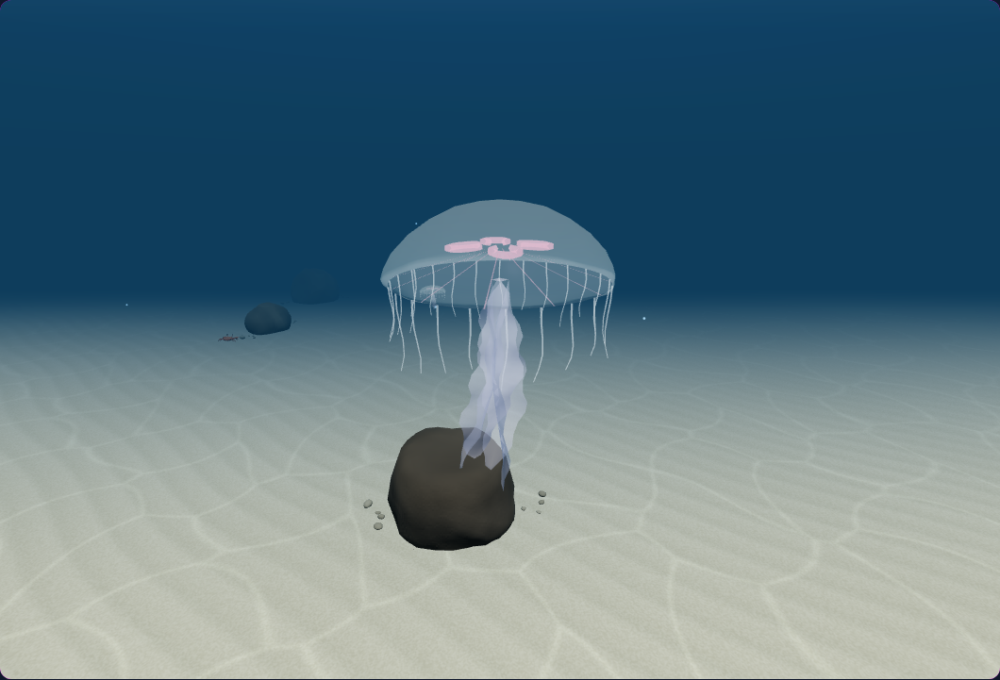
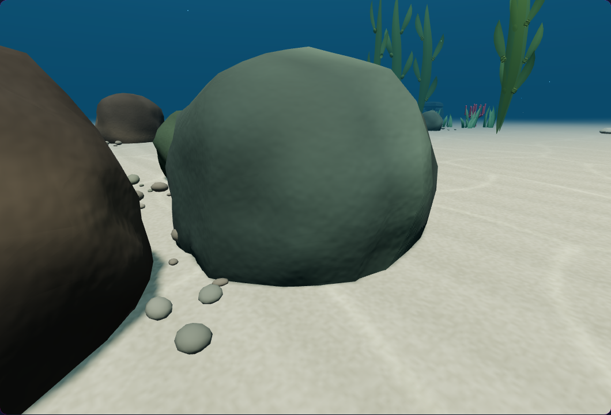
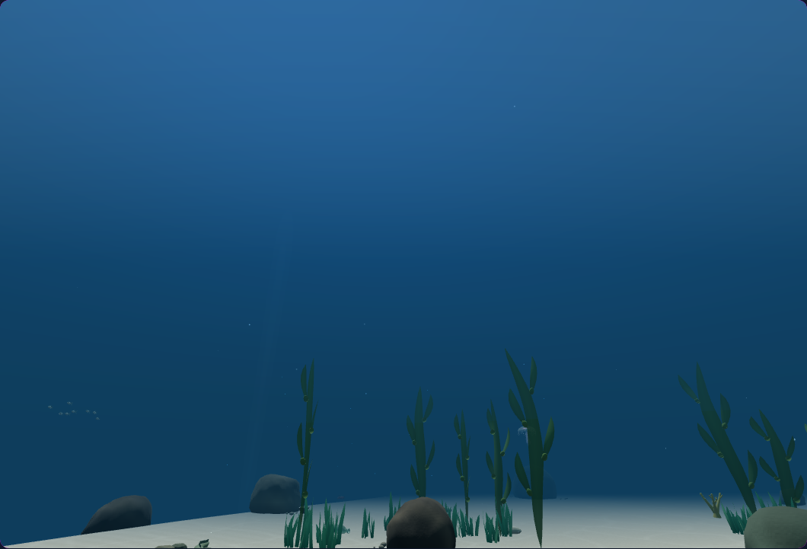
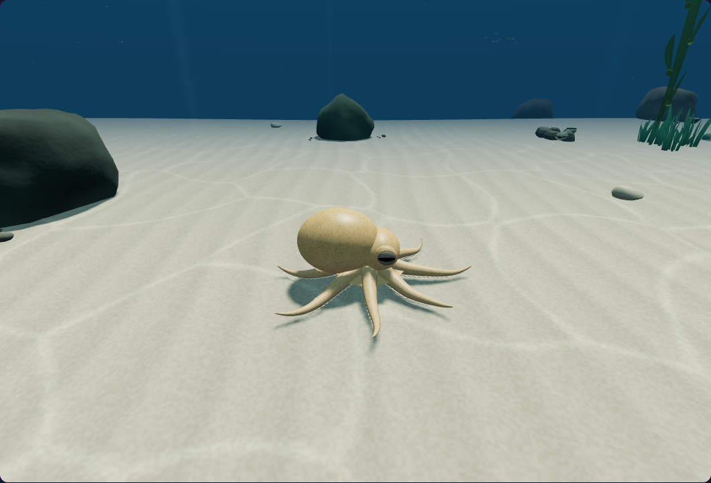
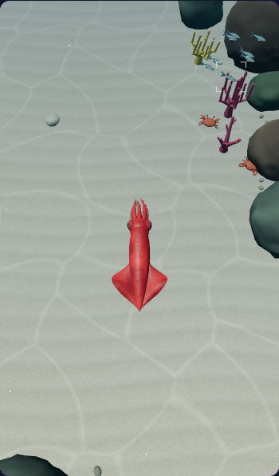
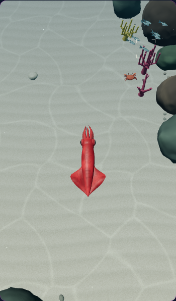

Watch the contraction and recovery
Native rendered frames of one existing jellyfish, viewed through a tracking camera. Scrub the cycle or play it to compare the movement.
Moon jellies now contract, accelerate and coast through the water. A gentle bank and trailing arms follow the stroke. Predator patrols turn smoothly, and reduced motion holds the jellyfish form steady during a quiet glide.

Native rendered frames of one existing jellyfish, viewed through a tracking camera. Scrub the cycle or play it to compare the movement.


Immediate pause · fixed camera.

After three seconds · upward diagnostic camera.


Native View control · balanced quality.


Native View control · phone / low quality.
107 targeted CPU checks and nine native browser scenarios passed. The tests cover zero-time frames, motion at 30/60/120 updates per second, desktop and phone controls, live mesh drawing, retained resources and cleanup. The animation uses the existing geometry and materials. The changed motion intentionally changes actor positions between before/after scenes. Validation details